Advertisement page for women struggling with divorce.

TEAMWORK
The project is led through collaboration with one web director, one writer, and one person responsible for both design and coding.
- Belongings
- ADIRE LEGAL PROFESSIONAL CORPORATION
- Project
- Advertisement page for women struggling with divorce.
- Role
- User research / UI design / Develop
- Term
- 3 month
User pain points
 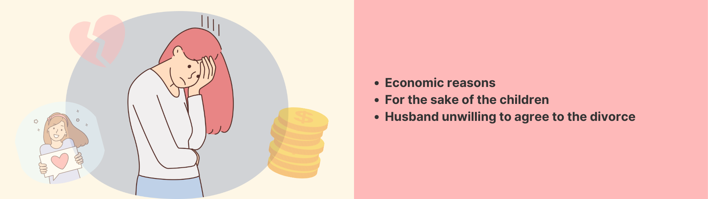
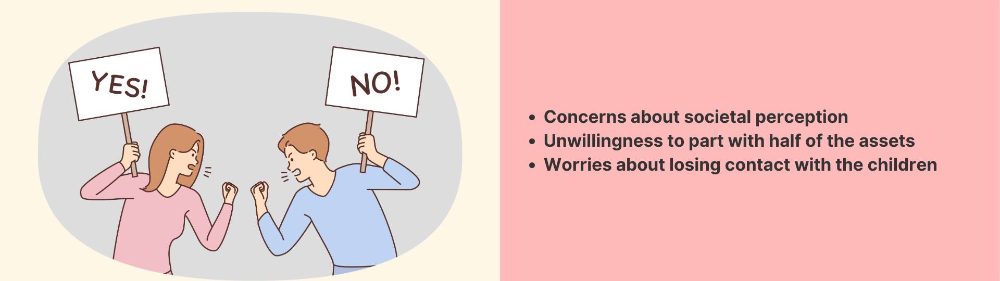
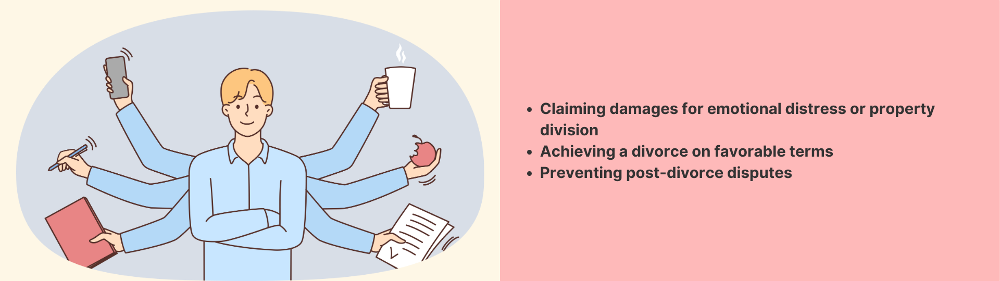
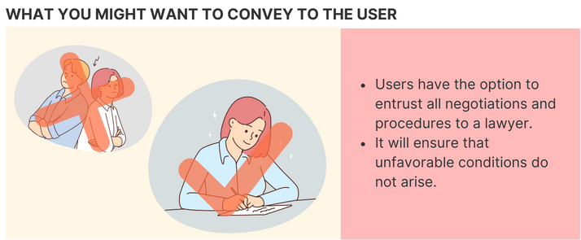
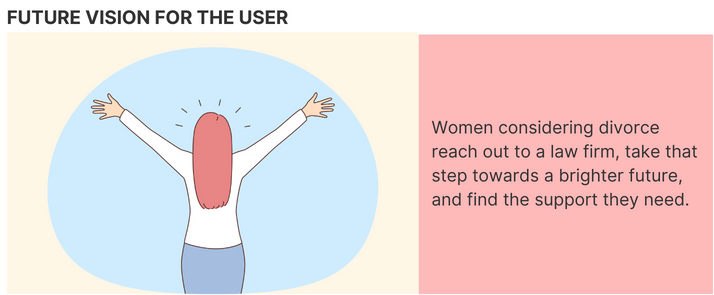
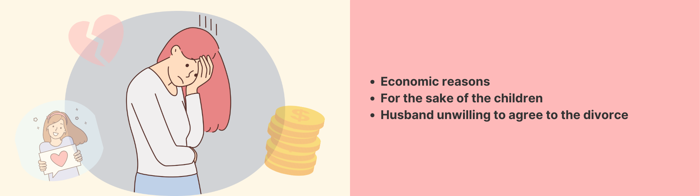
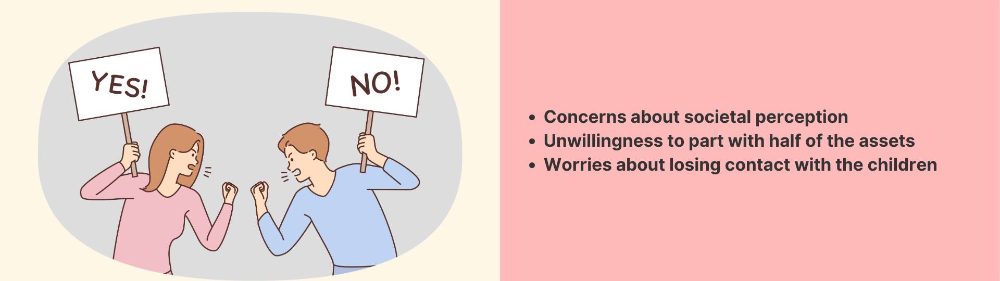
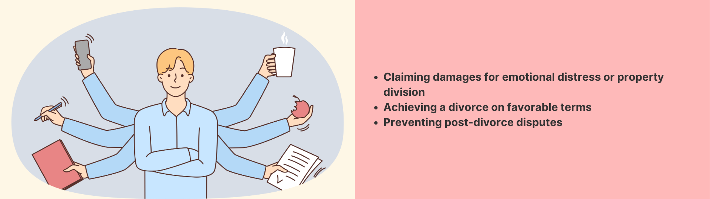
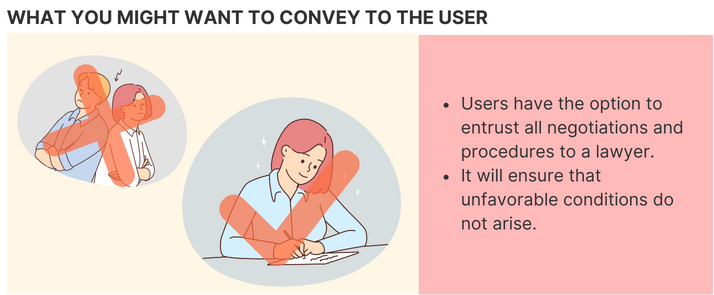
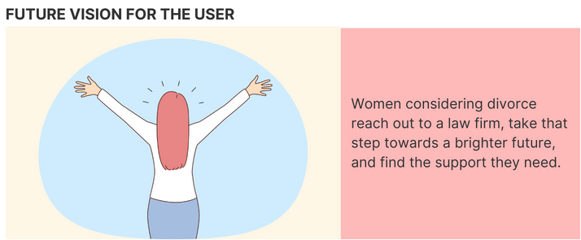
User Personas
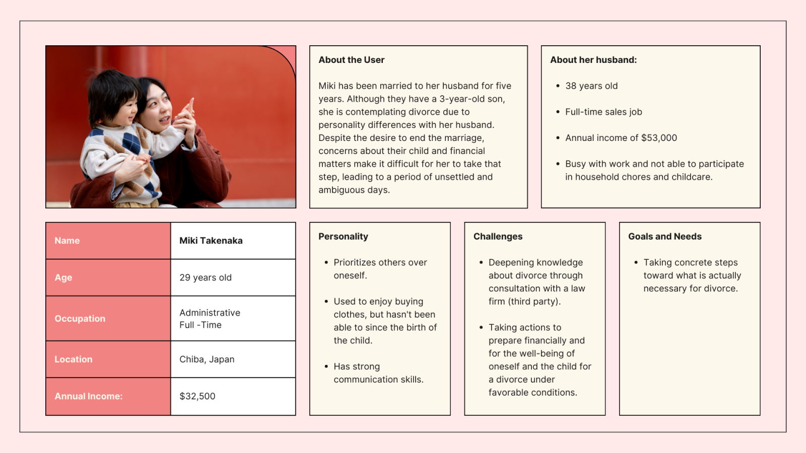About the Color
Brainstorming
- Conducted brainstorming to decide on the color and design direction.
- Utilized three keywords: "For women," "Approachability," and "A new step.
In Japan, the history of gender-based color distinctions
As emerged in the brainstorming session, there is still an association in Japan between warm colors like red and pink and the concept of femininity. Let me explain the historical background behind this perception.
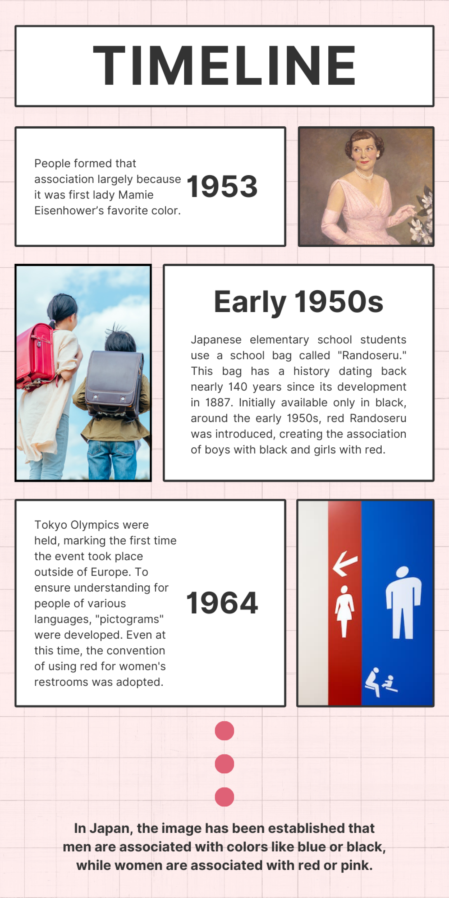Examples of shades within the pink spectrum being used include
As of 2024, in Japan, the association of women with the color pink is commonly observed in various aspects, such as clothing, products, and advertising.
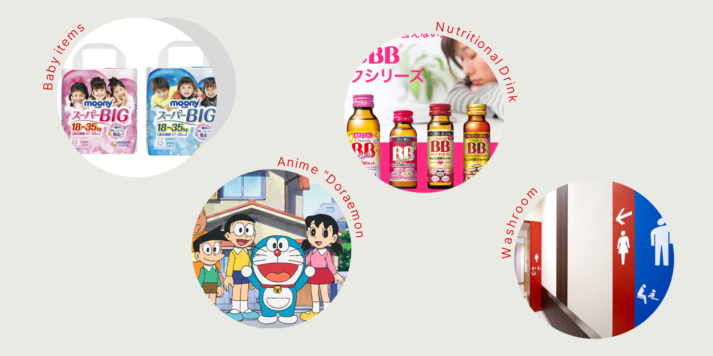Due to this history, there is still a tendency in Japan to associate warm colors like red and pink with women.
For the Japanese, cherry blossoms hold significant cultural importance.
In Japan, law firms are often perceived as having a high threshold, and there is a desire to encourage people to feel more comfortable seeking consultations. With the theme of "approachability" in mind, brainstorming was conducted. The keyword "sakura" (cherry blossoms) emerged from this process. I would like to explain the significance of sakura for the Japanese.
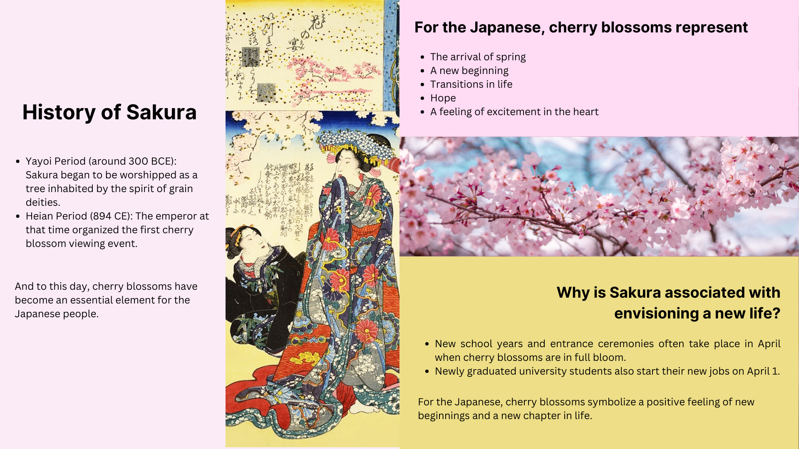Amber color
- A yellow shade representing hope.
- Evokes associations of taking a new step after divorce and a bright future ahead.
Result
As a result, the following color codes were adopted.
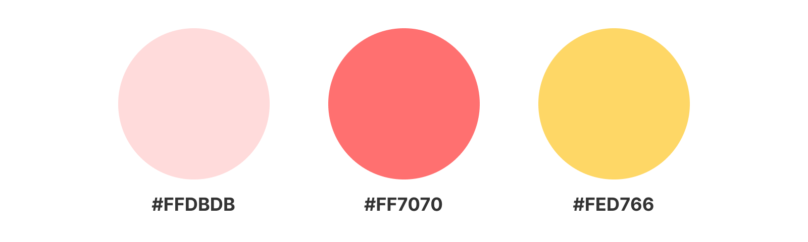Empathy Section
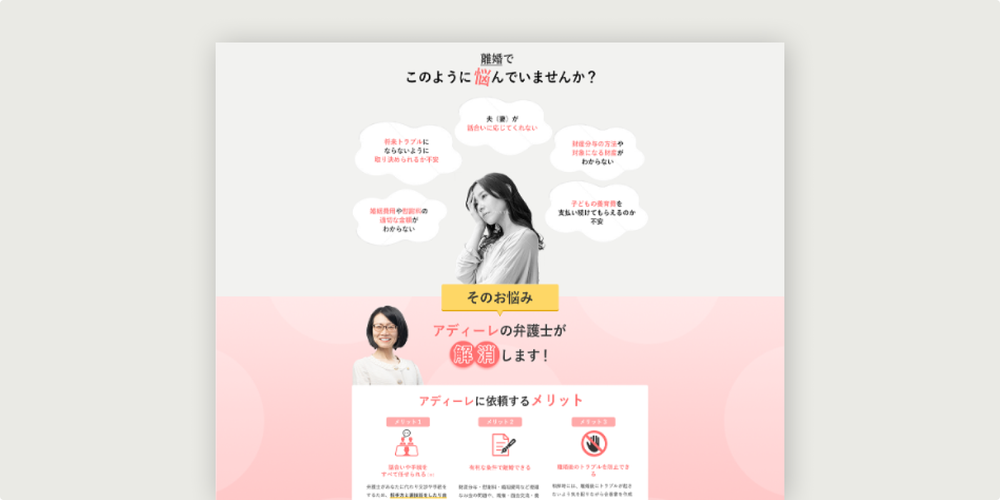Survey Related to Consumer Behavior
The marketing research results indicate that 'empathy' is crucial for the consumption behavior of Japanese women. The following is a survey conducted by one of the major newspaper companies, The Asahi Shimbun. It inquired about the impressions of advertisements published in the newspaper and the attitude changes, such as purchase intent, after viewing those advertisements.
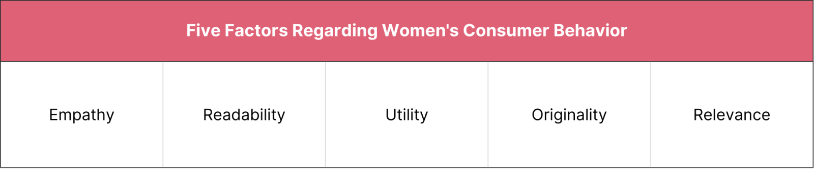Reference: The Key to Women's Consumer Behavior: 'Empathy'
The standardized coefficients of the 'Empathy' and 'Utility' factors are significant for 'Purchase Intent.' This indicates that to enhance purchasing motivation, it is crucial to increase 'Empathy' and 'Utility.
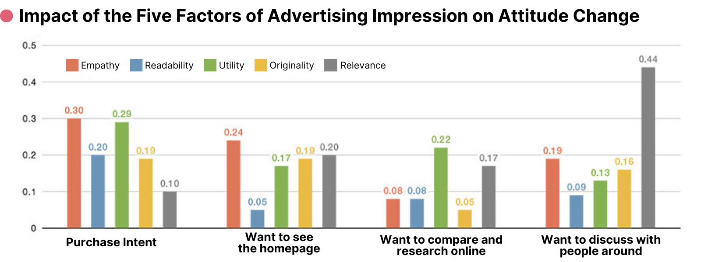Reference: The Key to Women's Consumer Behavior: 'Empathy'
Expressed through design
- Depicting concerns with muted tones.
- Using images of troubled women to convey 'women's concerns.'
- Subsequently transitioning to brighter tones with photos of lawyers to evoke empathy and guide the viewer towards a psychological state of empathy leading to engagement (in this case, consultation).
Redesigned the project for North American users
Translated and created designs tailored for the North American market for a project initially developed in Japan. Due to cultural differences between Japan and Canada, a mere translation of the Japanese project wouldn't capture all aspects. Therefore, I crafted designs from scratch to resonate with North American users.

Other works
The official website in Japanese
View detailsThe official website in English
View details